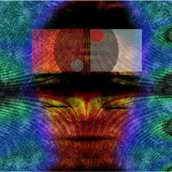

I saw my first bit of code when I was fourteen and modifying my band’s myspace page. The moment I realized that my high school offered web design classes, I signed up immediately. These classes introduced me to HTML/CSS from a young age. I graduated high school in 2014, so I began learning how to code when HTML5 was in its early stages, and using Adobe Dreamweaver was common practice. I loved it so much that I took additional technology and business classes my school offered, one of which was called Virtual Enterprise.
This specific class functioned as a corporate company with different positions, such as CEO, CFO, Accounting and Marketing. With my web design experience, I held the web/graphic designer position. We were all able to compete with other classes that took Virtual Enterprise across the country and it was such a fun and interactive experience. I have always had a knack for technology and felt very artistic so my teachers all urged me to go down this path.
“Elysium” was a fictional tech company with futuristic products. I designed this logo and the website for my Virtual Enterprise class in high school.
Early Creative Work

Self Portrait, 2014
Art for a song I wrote, 2016
Album Cover, 2017
Carving my own path
I went to college for a year and my initial major was Graphic Design. During college, I was wildly explorative with my interests and the rebel in me wanted to make my own path: one that was not influenced by teachers or parents. I dropped out of college and followed a passion of mine to work with animals. I had a thirst to make a difference in the world, but I was tired of school, completing tests, and being forced to take classes that did not interest me. Working with animals taught me that hard work for a good cause could feel good. I dedicated myself to doing this work for a few years, whether I was volunteering or working at a shelter or sanctuary.
Me with a mullet singing to ducks
Growth and Exploration
While working with animals, the desire to design and create never went away and I became unhappy in the position I was in. I never stopped using Adobe Illustrator to create digital art. I never stopped writing songs. The creativity inside me has never gone away and this is why I am back on the path I started years ago. There are so many ways to influence and impact the world through design and I plan on using my creative skills to make the world a better place. Enrolling in the Bloc platform has allowed me to brush up on my coding and visual design skills. I now have the toolbox I need to flourish and thrive in a professional world. In this program I experimented with a wide variety of design and coding tools that really shifted my view of modern web design and have made me incredibly excited to see its evolution. I look forward to getting to collaborate with you and other designers to gain more knowledge about the diverse field of Design.